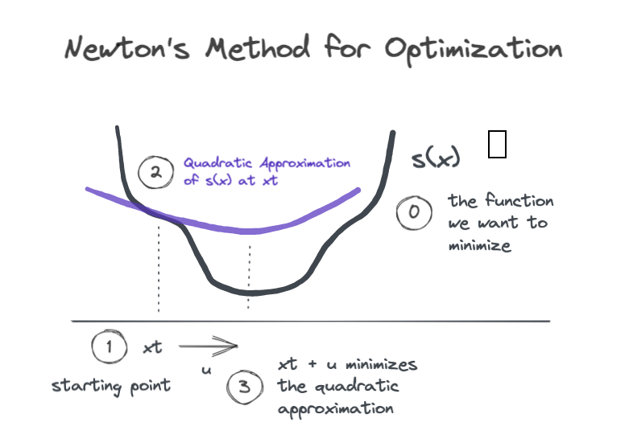

XGBoost Explained
Ahh, XGBoost, what an absolutely stellar implementation of gradient boosting. Once Tianqi Chen and Carlos Guestrin of the University of Washington published the XGBoost paper and shared the open source code in the mid 2010’s, the algorithm quickly gained adoption in the ML community, appearing in over half of winning Kagle submissions in 2015. Nowadays it’s certainly among the most popular gradient boosting libraries, along with LightGBM and CatBoost, although the highly scientific indicator of GitHub stars per year indicates that it is in fact the most beloved gradient boosting package of all. Since it was the first of the modern popular boosting frameworks, and since benchmarking indicates that no other boosting algorithm outperforms it, we can comfortably focus our attention on understanding XGBoost.
The XGBoost authors identify two key aspects of a machine learning system: (1) a flexible statistical model and (2) a scalable learning system to fit that model using data. XGBoost improves on both of these aspects, providing a more flexible and feature-rich statistical model and building a truly scalable system to fit it. In this post we’re going to focus on the statistical modeling innovations, outlining the key differences from the classic gradient boosting machine and divinginto the mathematical derivation of the XGBoost learning algorithm. If you’re not already familiar with gradient boosting, go back and read the earlier posts in the series before jumping in here.
Buckle up, dear reader. Today we understand how XGBoost works, no hand waving required.
XGBoost is a Gradient Boosting Machine
At a high level, XGBoost is an iteratively constructed composite model, just like the classic gradient boosting machine we discussed back in the GBM post . The final model takes the form
\[\hat{y}_i = F(\mathbf{x}_i) = b + \eta \sum_{k=1}^K f_k(\mathbf{x}_i) \]
where \(b\) is the base prediction, \(\eta\) is the learning rate hyperparameter that helps control overfitting by reducing the contributions of each booster, and each of the \(K\) boosters \(f_k\) is a decision tree. To help us connect the dots between theory and code, whenever we encounter new hyperparameters, I’ll point out their names from the XGBoost Parameter Documentation. So, \(b\) can be set by base_score, and \(\eta\) is set by either eta or learning_rate.
XGBoost introduces two key statistical learning improvements over the classic gradient boosting model. First, it reimagines the gradient descent algorithm used for training, and second it uses a custom-built decision tree with extra functionality as its booster. We’ll dive into each of these key innovations in the following sections.
Descent Algorithm Innovations
Regularized Objective Function
In the post on GBM with any loss function, we looked at loss functions of the form \(\sum_i l(y_i,\hat{y}_i)\) which compute some distance between targets \(y_i\) and predictions \(\hat{y}_i\) and sum them up over the training dataset. XGBoost introduces regularization into the objective function so that the objective takes the form
\[ L = \sum_i l(y_i,\hat{y}_i) + \sum_k \Omega(f_k) \]
where \(l\) is some twice-differentiable loss function. \(\Omega\) is a regularization that penalizes the complexity of each tree booster, taking the form
\[ \Omega(f) = \gamma T + \frac{1}{2} \lambda ||w||^2 \]
where \(T\) is the number of leaf nodes and \(||w||^2\) is the squared sum of the leaf prediction values. This introduces two new hyperparameters: \(\gamma\) which penalizes the number of leaf nodes and \(\lambda\) which is the L-2 regularization parameter for leaf predicted values. These are set by gamma and reg_lambbda in the XGBoost parametrization. Together, these provide powerful new controls to reduce overfitting due to overly complex tree boosters. Note that \(\gamma=\lambda=0\) reduces the objective back to an unregularized loss function as used in the classic GBM.
An Aside on Newton’s Method
As we’ll see soon, XGBoost uses Newton’s Method to minimize its objective function, so let’s start with a quick refresher.
Newton’s method is an iterative procedure for minimizing a function \(s(x)\). At each step we have some input \(x_t\), and our goal is to find a nudge value \(u\) such that
\[ s(x_t + u) \le s(x_t)\]
To find a good nudge value \(u\), we generate a local quadratic approximation of the function in the neighborhood of the input \(x_t\), and then we find the input value that would bring us to the minimum of the quadratic approximation.

The figure shows a single Newton step where we start at \(x_t\), find the local quadratic approximation, and then jump a distance \(u\) along the \(x\)-axis to land at the minimum of the quadratic. If we iterate in this way, we are likely to land close to the minimum of \(s(x)\).
So how do we compute the quadratic approximation? We use the second order Taylor series expansion of \(s(x)\) near the point \(x_t\).
\[ s(x_t + u) \approx s(x_t) + s'(x_t)u + \frac{1}{2} s''(x_t) u^2 \]
To find the nudge value \(u\) that minimizes the quadratic approximation, we can take the derivative with respect to \(u\), set it to zero, and solve for \(u\).
\[ 0 = \frac{d}{du} \left ( s(x_t) + s'(x_t)u + \frac{1}{2} s''(x_t) u^2 \right ) = s'(x_t) + s''(x_t) u \]
\[\rightarrow u^* = -\frac{s'(x_t)}{s''(x_t)} \]
And as long as \(s''(x_t)>0\) (i.e., the parabola is pointing up), \(s(x_t + u^*) \le s(x_t)\).
Tree Boosting with Newton’s Method
This lands us at the heart of XGBoost, which uses Newton’s method, rather than gradient descent, to guide each round of boosting. This explanation will correspond very closely to section 2.2 of the XGBoost paper, but here I’ll explicitly spell out some of the intermediate steps which are omitted from their derivation, and you’ll get some additional commentary from me along the way.
Newton Descent in Tree Space
Suppose we’ve done \(t-1\) boosting rounds, and we want to add the \(t\)-th booster to our composite model. Our current model’s prediction for instance \(i\) is \(\hat{y}_i^{(t-1)}\). If we add a new tree booster \(f_t\) to our model, the objective function would give
\[ L^{(t)} = \sum_{i=1}^n l(y_i, \hat{y}_i^{(t-1)} + f_t(\mathbf{x}_i)) + \Omega(f_t) \]
We need to choose \(f_t\) so that it decreases the loss, i.e. we want
\[ l(y_i, \hat{y}_i^{(t-1)} + f_t(\mathbf{x}_i)) \le l(y_i, \hat{y}_i^{(t-1)})\]
Does that sound familiar? In the previous section we used Newton’s method to find a value of \(u\) that would make \(s(x_t + u) \le s(x_t)\). Let’s try the same thing with our loss function. To be explicit, the parallels are: \(s(\cdot) \rightarrow l(y_i, \cdot)\), \(x_t \rightarrow \hat{y}_i^{(t-1)}\), and \(u \rightarrow f_t(\mathbf{x}_i)\).
Let’s start by finding the second order Taylor series approximation for the loss around the point \(\hat{y}_i^{(t-1)}\).
\[ l(y_i, \hat{y}_i^{(t-1)} + f_t(\mathbf{x}_i)) \approx l(y_i, \hat{y}_i^{(t-1)}) + g_i f_t(\mathbf{x}_i) + \frac{1}{2} h_i f_t(\mathbf{x}_i)^2 \]
where
\[ g_i = \frac{\partial}{\partial \hat{y}_i^{(t-1)}} l(y_i, \hat{y}_i^{(t-1)})\]
and
\[ h_i = \frac{\partial}{\partial^2 \hat{y}_i^{(t-1)}} l(y_i, \hat{y}_i^{(t-1)})\]
are the first and second order partial derivatives of the loss with respect to the current predictions. The XGBoost paper calls these the gradients and hessians, respectively. Remember that when we specify an actual loss function to use, we would also specify the functional form of the gradients and hessians, so that they are directly computable.
Now we can go back and substitute our quadratic approximation in for the loss function to get an approximation of the objective function in the neighborhood of \(\hat{y}_i^{(t-1)}\)..
\[ L^{(t)} \approx \sum_{i=1}^n [l(y_i, \hat{y}_i^{(t-1)}) + g_i f_t(\mathbf{x}_i) + \frac{1}{2} h_i f_t(\mathbf{x}_i)^2] + \Omega(f_t) \]
Since \(l(y_i,\hat{y}_i^{(t-1)})\) is constant regardless of our choice of \(f_t\), we can drop it and instead work with the modified objective, which gives us Equation (3) from the paper.
\[ \tilde{L}^{(t)} = \sum_{i=1}^n [ g_i f_t(\mathbf{x}_i) + \frac{1}{2} h_i f_t(\mathbf{x}_i)^2] + \Omega(f_t) \]
Now the authors are about to do something great. They’re about to show how to directly compute the optimal prediction values for the leaf nodes of \(f_t\). We’ll circle back in a moment about how we find a good structure for \(f_t\), i.e. good node splits, but we’re going to find the optimal predicted values for any tree structure having \(T\) terminal nodes. Let \(I_j\) denote the set of instances \(i\) that are in the \(j\)-th leaf node of \(f_t\). Then we can rewrite the objective.
\[ \tilde{L}^{(t)} = \sum_{j=1}^T \left [ \sum_{i \in I_j} g_i f_t(\mathbf{x}_i) + \frac{1}{2} \sum_{i \in I_j} h_i f_t(\mathbf{x}_i)^2 \right ] + \Omega(f_t)\]
We notice that for all instances in \(I_j\), the tree yields the same predicted value \(f_t(\mathbf{x}_i)=w_j\). Substituting in \(w_j\) for the predicted values and expanding \(\Omega(f_t)\) we get
\[ \tilde{L}^{(t)} = \sum_{j=1}^T \left [ \sum_{i \in I_j} g_i w_j + \frac{1}{2} \sum_{i \in I_j} h_i w_j^2 \right ] + \gamma T + \frac{1}{2} \lambda \sum_{j=1}^T w_j^2\]
Rearranging terms we obtain Equation (4).
\[ \tilde{L}^{(t)} = \sum_{j=1}^T \left [ w_j \sum_{i \in I_j} g_i + \frac{1}{2} w_j^2 \left ( \sum_{i \in I_j} h_i + \lambda \right ) \right ] + \gamma T \]
For each leaf node \(j\), our modified objective function is quadratic in \(w_j\). To find the optimal predicted values we take the derivative, set to zero, and solve for \(w_j\).
\[ 0 = \frac{d}{dw_j} \left [ w_j \sum_{i \in I_j} g_i + \frac{1}{2} w_j^2 \left ( \sum_{i \in I_j} h_i + \lambda \right ) \right ] = \left ( \sum_{i \in I_j} h_i + \lambda \right ) w_j + \sum_{i \in I_j} g_i \]
This yields Equation (5).
\[ w_j^* = - \frac{\sum_{i \in I_j} g_i } {\sum_{i \in I_j} h_i + \lambda } \]
Split Finding
Now that we know how to find the optimal predicted value for any leaf node, we need to identify a criterion for finding a good tree structure, which boils down to finding the best split for a given node. Back in the [decision tree from scratch](/decision-tree-from-scratch post, we derived a split evaluation metric based on the reduction in the objective function associated with a particular split.
To do that, first we need a way to compute the objective function given a particular tree structure. Substituting the optimal predicted values \(w_j^*\) into the objective function, we get Equation (6).
\[ \tilde{L}^{(t)} = -\frac{1}{2} \sum_{j=1}^T \frac{ (\sum_{i \in I_j} g_i )^2 } {\sum_{i \in I_j} h_i + \lambda} + \gamma T \]
We can then evaluate potential splits by comparing the objective before making a split to the objective after making a split, where the split with the maximum reduction in objective (a.k.a. gain) is best.
More formally, let \(I\) be the set of \(n\) data instances in the current node, and let \(I_L\) and \(I_R\) be the instances that fall into the left and right child nodes of a proposed split. Let \(L\) be the total loss for all instances in the node, while \(L_L\) and \(L_R\) are the losses for the left and right child nodes. The total loss contributed by instances in node \(I\) prior to any split is
\[L_{\text{before split}} = -\frac{1}{2} \frac{ (\sum_{i \in I} g_i )^2 } {\sum_{i \in I} h_i + \lambda} + \gamma \]
And the loss after splitting \(I\) into \(I_L\) and \(I_R\) is
\[L_{\text{after split}} = L_L + L_R = -\frac{1}{2} \frac{ (\sum_{i \in I_L} g_i )^2 } {\sum_{i \in I_L} h_i + \lambda} -\frac{1}{2} \frac{ (\sum_{i \in I_R} g_i )^2 } {\sum_{i \in I_R} h_i + \lambda} + 2 \gamma \]
The gain from this split is then
\[ \Delta L = L_{\text{before split}} - L_{\text{after split}} = L - (L_L + L_R)\] \[\Delta L = \frac{1}{2} \left [ \frac{ (\sum_{i \in I_L} g_i )^2 } {\sum_{i \in I_L} h_i + \lambda} + \frac{ (\sum_{i \in I_R} g_i )^2 } {\sum_{i \in I_R} h_i + \lambda} - \frac{ (\sum_{i \in I} g_i )^2 } {\sum_{i \in I} h_i + \lambda} \right ] - \gamma \]
which is Equation (7) from the paper. In practice it makes sense to accept a split only if the gain is positive, thus the \(\gamma\) parameter sets the minimum gain required to make a further split. This is why \(\gamma\) can be set with the parameter gamma or the more descriptivemin_loss_split.
Tree Booster Innovations
Missing Values and Sparsity-Aware Split Finding
The XGBoost paper also introduces a modified algorithm for tree split finding which explicitly handles missing feature values. Recall that in order to find the best threshold value for a given feature, we can simply try all possible threshold values, recording the score for each. If some feature values are missing, the XGBoost split finding algorithm simply scores each threshold twice: once with missing value instances in the left node and once with them in the right node. The best split will then specify both the threshold value and to which node instances with missing values should be assigned. The paper calls this the sparsity aware split finding routine, which is defined as Algorithm 2.
Preventing Further Splitting
In addition to min_loss_split discussed above, XGBoost offers another parameter for limiting further tree splitting called min_child_weight. This name is a little confusing to me because the word “weight” has various meanings. In the context of this parameter, “weight” refers to the sum of the hessians \(\sum h_i\) over instances in the node. For squared error loss \(h_i=1\), so this is equivalent to the number of samples. Thus this parameter generalizes the notion of the minimum number of samples allowed in a terminal node.
Sampling
XGBoost takes a cue from Random Forest and introduces both column and row subsampling. These sampling methods can prevent overfitting and reduce training time by limiting the amount of data to be processed during boosting.
Like random forest, XGBoost implements column subsampling, which limits tree split finding to randomly selected subsets of features. XGBoost provides column sampling for each tree, for each depth level within a tree, and for each split point within a tree, controlled by colsample_bytree, colsample_bbylevel, and colsample_bbynode respectively.
One interesting distinction is that XGBoost implements row sampling without replacement using subbsample, whereas random forest uses bootstrapping. The choice to bootstrap rows in RF probably spurred from a desire to use as much data as possible while training on the smaller datasets of the 1990’s when RF was developed. With larger datasets and the ability to generate a large number of trees, XGBoost simply takes a subsample of rows for each tree.
Scalability
Even though we’re focused on statistical learning, I figured I’d comment on why XGBoost is highly scalable. Basically it boils down to efficient, parallelizable, and distributable methods for growing trees. You’ll notice there is a tree_method parameter which allows you to choose between the greedy exact algorithm (like the one we discussed in the decision tree from scratch post) and the approximate algorithm, which offers various scalability-related functionality, notably including the ability to consider only a small number of candidate split points instead of trying all possible splits. The algorithm also uses clever tricks like pre-sorting data for split finding and caching frequently needed values.
Why XGBoost is so Successful
As I mentioned in the intro, XGBoost is simply a very good implementation of the gradient boosting tree model. Therefore it inherits all the benefits of decision trees and tree ensembles, while making even further improvements over the classic gradient boosting machine. These improvements boil down to
- more ways to control overfitting
- elegant handling of custom objectives
- scalability
First, XGBoost introduces two new tree regularization hyperparameters \(\gamma\) and \(\lambda\) which are baked directly into its objective function. Combining these with the additional column and row sampling functionality provides a variety of ways to reduce overfitting.
Second, the XGBoost formulation provides a much more elegant way to train models on custom objective functions. Recall that for custom objectives, the classic GBM finds tree structure by fitting a squared error decision tree to the gradients of the loss function and then sets each leaf’s predicted value by running a numerical optimization routine to find the optimal predicted value.
The XGBoost formulation improves on this two-stage approach by unifying the generation of tree structure and predicted values. Both the split scoring metric and the predicted values are directly computable from the instance gradient and hessian values, which are connected directly back to the overall training objective. This also removes the need for additional numerical optimizations, which contributes to speed, stability, and scalability.
Finally, speaking of scalability, XGBoost emerged at a time when industrial dataset size was exploding. Many use cases require scalable ML systems, and all use cases benefit from faster training and higher model development velocity.
Wrapping Up
Well, there you go, those are the salient ideas behind XGBoost, the gold standard in gradient boosting model implementations. Hopefully now we all understand the mathematical basis for the algorithm and appreciate the key improvements it makes over the classic GBM. If you want to go even deeper, you can join us for the next post where we’ll roll up our sleeves and implement XGBoost entirely from scratch.
References
Exercise
Proove that the XGBoost Newton Descent generalizes the classic GBM gradient descent. Hint: show that XGBoost with a squared error objective and no regularization reduces to the classic GBM.